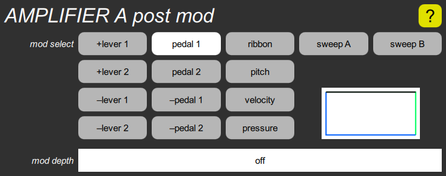

AMPLIFIER post mod cluster

The AMPLIFIER section has one of these for each channel. It contains a mod select parameter that chooses a post modulation that applies after mod 1 and mod 2 are added together, and a mod depth parameter that controls how much to vary the volume.
The mod select parameter gives you eight lever and pedal choices, the optional ribbon controller, pitch, velocity, the optional pressure sensor, or either sweep control signal for tremolo.
The mod depth scales the post modulation around a value of one unit, rather than zero. That is, if the depth is turned off (the default), you always get 100% of the nominal volume. If it is set to 100%, the post mod can vary the volume from zero to 100%. If it is set to 50%, it can vary the volume from 50% to 100%. If it is set to a negative value, it can vary from 100% down to some lesser value.
The rectangular box is actually a graph of the response, and varies when the two parameters are adjusted. See the mod depth parameter for details on how to interpret these graphs.